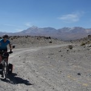
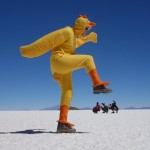

"Je hais les voyages et les explorateurs" – Claude Lévi-Strauss
You are here:Home
› Article
› Traversée du Salar de Uyuni et de Coipasa en vélo
Traversée du Salar de Uyuni et de Coipasa en vélo
Le Salar de Uyuni, c’est le pèlerinage du cyclotouriste en Amérique du Sud. Les motards ont la « Route Sixty Six », les marathoniens ont New York, les joueurs de boules carrées ont Cagnes-sur-Mer et les cyclos ont Uyuni.

Vers le Salar de Coipasa – Bolivie
Ca roule… pour l’instant – Salar de Coipasa
Traces – Salar de Coïpasa
Margaux – Salar de Coipasa
Un peu de sel – Salar de Coipasa
Après le Salar de Coipasa
Vent dans le dos – Salar de Uyuni
Ile pescador – Salar de Uyuni
Ile d’Incahuasi – Salar de Uyuni
Canard géant – Salar de Uyuni
Souffle magique – Salar de Uyuni

Canard géant – Salar de Uyuni
Canard confit – Salar de Uyuni
Passagers clandestins – Salar de Uyuni
Aladin géant – Salar de Uyuni
Chacun sa bière – Salar de Uyuni
Prince charmant – Salar de Uyuni
Poussin géant – Salar de Uyuni
Fidèle monture – Salar de Uyuni
Te tchieu c’t’équipe – Salar de Uyuni
Ciel étoilé – Salar de Uyuni
Campement – Salar de Uyuni
Effet lumineux – Salar de Uyuni
Hiiha – Salar de Uyuni
Campement – Salar de Uyuni
Petit Déjeuner crêpes – Salar de Uyuni
Drapeaux – Salar de Uyuni
{kind=link}
{kind=link}
{kind=link}
{kind=link}
{kind=link}
{kind=link}
{kind=link}
{kind=link}
{kind=link}
{kind=link}
{kind=link}
{kind=link}
{kind=link}
{kind=link}
{kind=link}
{kind=link}
{kind=link}
{kind=link}
{kind=link}
{kind=link}

{kind=link}
{kind=link}
{kind=link}
{kind=link}
{kind=link}